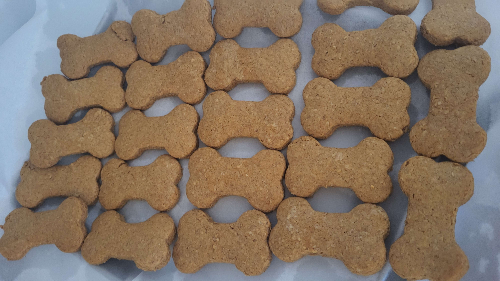

Puppy Treats

You can just do whatever you want with your life and that includes making dog treats for yourself
This recipe is partially cobbled together from altered graham cracker recipes, to give you an idea of what the taste and texture is like.
Ingredients
- ¼ cup of unsalted butter, softened
- ½ cup of honey
- 1 teaspoon of cinnamon
- 1 teaspoon of baking soda
- ¼ teaspoon of salt
- 2½ teaspoons of vanilla extract
- 1 cup of whole wheat flour
- ¾ cup of all purpose flour
- 2 to 3 tablespoons of milk
How to make them
- Cream honey and butter together until smooth.
- Add the cinnamon, baking soda, salt, and vanilla. Mix together.
- Add both types of flour and mix together. The dough will be crumbly and dry at first.
- Add 2 tablespoons of milk and mix together. If the dough still looks dry, add another tablespoon of milk.
- Roll into a flat disc and cover with plastic wrap. Chill in the fridge for an hour.
- After the dough is chilled, preheat the oven to 350° F.
- Take the dough out, and roll it out onto a floured surface. The thinner you roll them, the crispier they'll be. Try to aim for 1/8 of an inch or so - they'll rise a little bit in the oven.
- Use a bone-shaped cookie cutter (or whatever shape you want, but like . these are supposed to be dog treats, sooo......) and cut the dough. The amount you get will depend on how thin you rolled them.
- Bake for 13-16 minutes, until golden brown. They'll be a bit soft at first, but will harden as they cool.
- Let them cool completely, then transfer to an airtight container and store them for up to 2 weeks.
- :3